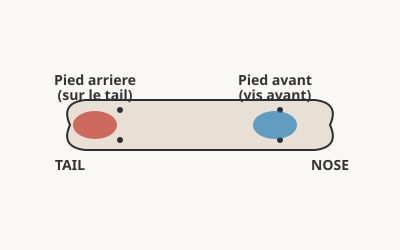
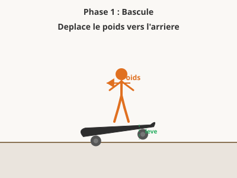
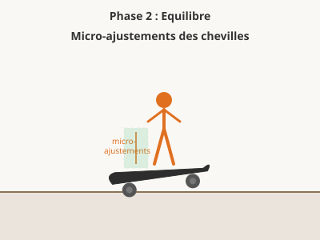
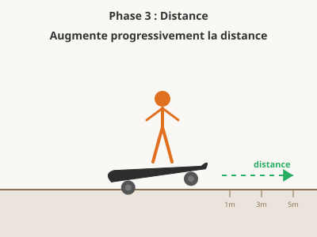
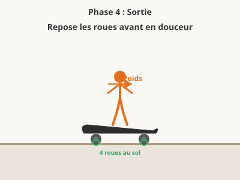

Description
Le manual consiste a rouler en equilibre sur les deux roues arriere, sans poser le tail au sol. C'est un trick de base qui developpe l'equilibre et le controle, essentiel pour les enchainements (combos).
Prerequis
- Savoir rouler en equilibre a vitesse moderee
- Etre a l'aise pour ajuster son poids sur la planche
Position des pieds

Pied arriere
Sur le tail ou juste au-dessus, pret a doser la bascule
Pied avant
Au niveau des vis avant, controle l'inclinaison de la planche
Les 4 phases du Manual




Etapes detaillees
- Roule a vitesse moderee, genoux legerement flechis.
- Deplace ton poids vers l'arriere en appuyant doucement sur le tail.
- Leve les roues avant du sol en gardant le tail au-dessus du sol (ne pas racler).
- Equilibre-toi en ajustant la pression du pied avant et du pied arriere.
- Regarde devant toi, pas tes pieds. Utilise tes bras pour l'equilibre.
- Pour sortir, repose les roues avant doucement en ramenant le poids vers l'avant.
Progression d'apprentissage
Trouver le point d'equilibre
Sentir le point de bascule et le controler a basse vitesse
Bascule statique
A l'arret ou presque, appuie sur le tail pour lever les roues avant, puis repose-les.
10 bascules controlees
Manual 1 metre
En roulant lentement, leve les roues avant et tiens l'equilibre sur 1 metre.
5 reussites d'affilee
Sortie propre
Apprends a reposer les roues avant en douceur pour sortir du manual.
10 sorties propres
Augmenter la distance
Tenir le manual de plus en plus longtemps
Manual 3 metres
Place deux reperes a 3 metres d'ecart. Manual de l'un a l'autre.
5 reussites d'affilee
Manual 5 metres
Augmente la distance a 5 metres. Concentre-toi sur les micro-ajustements.
3 reussites d'affilee
Manual a vitesse variable
Essaie le manual a differentes vitesses pour comprendre l'effet sur l'equilibre.
3 reussites a chaque vitesse
Manual sur des elements
Maintenir le manual sur des surfaces variees
Manual sur un trottoir
Monte sur un trottoir et enchaine un manual.
3 reussites d'affilee
Manual sur un muret / ledge
Manual sur un element sureleve et etroit.
3 reussites d'affilee
Manual long (10 metres+)
Sur surface plane, vise les 10 metres et plus.
1 reussite propre
Combos et enchainements
Integrer le manual dans des enchainements de tricks
Ollie -> Manual
Fais un ollie et atterris directement en manual.
3 reussites d'affilee
Manual -> Shuvit out
Termine un manual par un pop shuvit pour sortir.
3 reussites d'affilee
Manual -> Kickflip out
Termine un manual par un kickflip (trick avance).
1 reussite propre
Exercices pratiques
Le balancier Phase 1
A faible vitesse, bascule d'avant en arriere entre les roues avant et le tail. Le but est de sentir les deux points de bascule.
Le fil invisible Phase 1
Trace une ligne droite a la craie (3 metres). Roule en manual en suivant cette ligne.
Le compteur Phase 2
Compte dans ta tete pendant le manual. Note ton record a chaque session et essaie de le battre.
Les portes Phase 2
Place des plots en zigzag tous les 2 metres. Passe entre eux en manual sans reposer les roues avant.
Le manual pad Phase 3
Trouve un muret ou banc bas. Monte dessus et fais un manual sur toute la longueur.
Le combo ollie-manual Phase 4
Fais un ollie et atterris directement en manual sans reposer les roues avant.